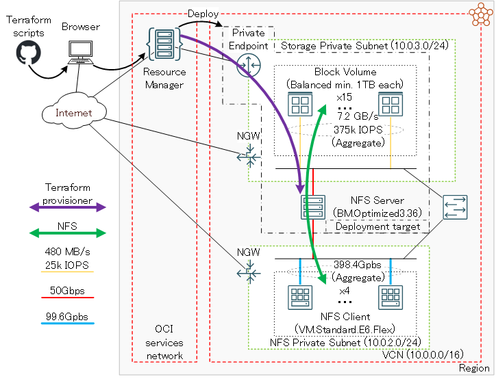
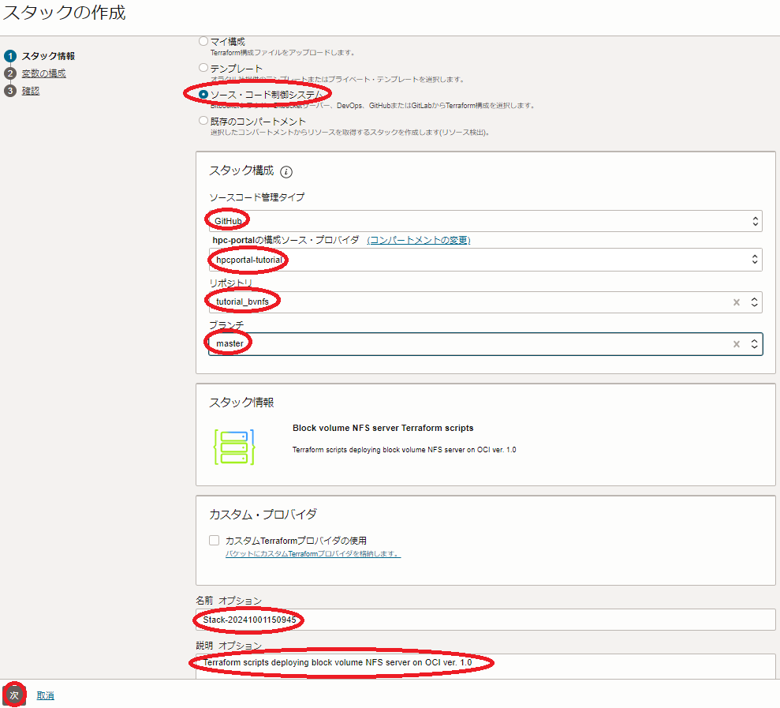

0. 概要
ブロック・ボリューム は、以下の特徴からHPCクラスタやGPUクラスタのファイル共有ストレージとして使用するNFSサーバのストレージに最適なサービスです。
- 同一 可用性ドメイン 内の異なる フォルト・ドメイン に複数のレプリカを持ち高い可用性を実現
- ディスク装置にNVMe SSDを採用することで高いスループットとIOPSを実現
また、Intel Ice Lakeプロセッサを搭載するベア・メタル・シェイプ BM.Optimized3.36 は、50 GbpsのTCP/IP接続用ポートを2個搭載し、それぞれをiSCSI接続の ブロック・ボリューム アクセス用途とNFSクライアントへのNFSサービス用途に割当てることで、コストパフォーマンスの高いNFSサーバ用インスタンスとして利用することが可能です。
OCIは、NFSのマネージドサービスである ファイル・ストレージ も提供しており、OCIコンソールから簡単にNFSファイルサービスをデプロイすることが出来ますが、本チュートリアルのように少しだけ手間をかけて ブロック・ボリューム とベア・メタル・インスタンスを組み合わせたNFSファイルサービスを自身で構築することで、 ファイル・ストレージ よりもコストパフォーマンスの高いファイル共有ストレージを構築することが出来ます。
ファイル・ストレージ とブロック・ボリュームNFSサーバの比較詳細は、 OCI HPCテクニカルTips集 の コストパフォーマンスの良いファイル共有ストレージ構築方法 を参照してください。
以上を踏まえて本チュートリアルは、 マーケットプレイス から無料で利用可能なファイル共有ストレージ環境を構築するための スタック を利用し、以下構成の典型的なNFSのファイル共有ストレージ環境を リソース・マネージャ から自動構築、構築したNFSファイルシステム性能をIORとmdtestで検証します。

| 利用するサービス | 構成 | 用途 | |
|---|---|---|---|
| ストレージ | ブロック・ボリューム | 1 TB Balanced x 15 | ファイル共有ストレージ領域 |
| NFSサーバ | ベアメタルインスタンス | BM.Optimized3.36 x 1 | NFSサーバ |
| NFSクライアント | VMインスタンス | VM.Standard2.24 x 4 | ファイルシステムベンチマーク用 NFSクライアント |
| Bastionノード | VMインスタンス | VM.Standard2.2 x 1 | インターネットからのログイン用 ゲートウェイ |
このファイル共有ストレージ環境構築用 スタック を利用すると、通常であれば数日かかるようなファイル共有ストレージ構築作業を、OCIコンソールのGUIから10項目程度のメニューを選択するだけで実施することが可能になります。
所要時間 : 約1時間
前提条件 : ファイル共有ストレージを収容するコンパートメント(ルート・コンパートメントでもOKです)の作成と、このコンパートメントに対する必要なリソース管理権限がユーザーに付与されていること。
注意 : 本コンテンツ内の画面ショットは、現在のOCIコンソール画面と異なっている場合があります。
また使用するファイル共有ストレージ環境構築用 スタック のバージョンが異なる場合も、画面ショットが異なる場合があります。
1. ファイル共有ストレージ環境構築
1-0. 概要
本章は、ファイル共有ストレージ環境構築用 スタック を利用し、ファイル共有ストレージ環境を構築します。
ファイル共有ストレージ環境構築用 スタック は、構築を大きく2つのステップに分けて実行しており、前半は Terraform を使用したOCIレベルのリソース構築フェーズで、後半は Terraform から起動される Ansible によるOSレベルのカスタマイズフェーズです。
具体的には、以下のような処理が行われます。
[ Terraform によるOCIリソース構築フェーズ]
- 仮想クラウド・ネットワーク と関連するネットワークリソース構築
- Bastionノードインスタンス構築
- NFSサーバインスタンス構築
- NFSクライアントインスタンス構築
- ブロック・ボリューム 構築
- Ansible 関連ソフトウェアインストール
[ Ansible によるOSレベルカスタマイズフェーズ]
- firewalld停止
- SELinux無効化
- ブロック・ボリューム 領域ファイルシステム構築
- /etc/hosts ファイル生成
- NFSサーバのセカンダリVNIC設定
- NFSファイル共有環境構築
またこの スタック は、 リソース・マネージャ に作成する スタック からファイル共有ストレージ環境を作成するため、これを許可する IAMポリシー が必要です。
よって本章では、以下の手順でファイル共有ストレージ環境を作成します。
- IAMポリシー 作成
- スタック の作成
- スタック の計画
- スタック の適用
1-1. IAMポリシー作成
本章は、 リソース・マネージャ に作成する スタック からファイル共有ストレージ環境を作成するための IAMポリシー を作成します。
-
OCIコンソールにログインし、 アイデンティティとセキュリティ → ポリシー とメニューを辿ります。
-
表示される以下 xxxxコンパートメント内のポリシー 画面で、 ポリシーの作成 ボタンをクリックします。
この際、 コンパートメント プルダウンメニューがファイル共有ストレージ環境を作成する コンパートメント と異なる場合は、これを修正します。
-
表示される以下 ポリシーの作成 画面で、各フィールドに以下の情報を入力し 作成 ボタンをクリックします。
なお、ここに記載のないフィールドは、デフォルトのままとします。- 名前 ： IAMポリシー に付与する名前
- 説明 ： IAMポリシー に付与する説明（用途等）
- ポリシー・ビルダー ： 作成する IAMポリシー を指定する以下構文
（ 手動エディタの表示 ボタンをクリックして表示）（※1）
allow service compute_management to use tag-namespace in compartment compartment_name allow service compute_management to manage compute-management-family in compartment compartment_name allow service compute_management to read app-catalog-listing in compartment compartment_name allow group group_name to manage all-resources in compartment compartment_name※1）コンパートメント 名と4行目の グループ 名は、自身のものに置き換えます。

1-2. スタックの作成
本章は、 マーケットプレイス から無料で利用可能なファイル共有ストレージ環境構築用 スタック を元に、前述のファイル共有ストレージ環境を構築するための スタック を作成します。
-
以下マーケットプレイスのファイル共有ストレージ環境構築用 スタック ページにアクセスします。
https://cloud.oracle.com/marketplace/application/82147253
OCIコンソールへのログイン画面が表示された場合（まだログインしていない場合）、ログインを完了します。
-
表示される以下画面の右上で、 スタック をデプロイする リージョン を選択し、 オラクル社標準の条件および規制を確認した上でこれに同意します。 チェックボックスをチェックし、 スタックの起動 ボタンをクリックします。

- 表示される以下 スタック情報 画面で、以下の情報を入力・確認し、下部の 次 ボタンをクリックします。
- 名前 : スタック に付与する名前（任意）
- 説明 : スタック に付与する説明（任意）
- コンパートメントに作成 : スタック を作成する コンパートメント (※2)
※2）OCIコンソールで最後に使用していた コンパートメント が引き継がれるため、意図した コンパートメント でない場合は、ファイル共有ストレージ環境構築用 スタック ページにアクセスする前に、予め所望の コンパートメント を選択しておきます。

-
表示される 変数の構成 画面で、各画面フィールドに以下の情報を入力し、下部の 次 ボタンをクリックします。
なお、ここに記載のないフィールドは、デフォルトのままとします。4.1 General Deployment Configuration フィールド
- SSH Public Key : Bastionノードにログインする際使用するSSH秘密鍵に対応する公開鍵
- Availability Domain : ファイル共有ストレージ環境をデプロイするAD

4.2 NFS Server Instance Configuration フィールド
- NFS Storage Server Compute Shape : BM.Optimized3.36

4.3 NFS Storage Configuration フィールド
- XFS-1: Build file system using either Higher/Balanced/Lower Cost Perfomrance Block Volumes : チェック
- Block Volume Storage Performance tier : Balanced
- Number of block volumes : 15
- Block volume size : (※3)
※3） NFSディスク領域の総容量を本チュートリアルで使用する15 TBより増やす場合は、必要な総容量を15で割った値をこのフィールドに指定します。

4.4 NFS Client Instance Configuration - Optional フィールド
- Create Compute Nodes : チェック
- Number of clients : 4

-
表示される 確認 画面で、これまでの設定項目が意図したものになっているかを確認し、以下 作成されたスタックで適用を実行しますか。 フィールドの 適用の実行 をチェックオフし、下部の 作成 ボタンをクリックします。

ここで 適用の実行 をチェックした場合、 作成 ボタンのクリックと同時に スタック の適用が開始され、ファイル共有ストレージ環境のデプロイが始まりますが、このチュートリアルでは スタック の計画を実行してから適用を行います。
これで、以下画面のとおりファイル共有ストレージ環境構築用 スタック が作成されました。

1-3. スタックの計画
本章は、完成したリソース・マネージャの スタック を計画し、どのようなリソースがデプロイされるか確認します。
-
作成した スタック の以下 スタックの詳細 画面で、 計画 ボタンをクリックします。

-
表示される以下 計画 サイドバーで、 計画 ボタンをクリックします。

-
表示される以下 ジョブ詳細 ウィンドウで、左上のステータスが 受入れ済 → 進行中 → 成功 と遷移すれば、 スタック の計画が終了しています。

表示される以下 ログ フィールドで、適用時にデプロイされるリソースを確認します。

1-4. スタックの適用
本章は、計画で作成されるリソースに問題が無いことを確認した スタック に対し、適用を行いファイル共有ストレージ環境をデプロイします。
-
以下 スタックの詳細 画面で、 適用 ボタンをクリックします。

-
表示される以下 適用 サイドバーで、 適用 ボタンをクリックします。

-
表示される以下 ジョブ詳細 ウィンドウで、左上のステータスが 受入れ済 → 進行中 と遷移すれば、 スタック の適用が実施されています。

表示される以下 ログ フィールドで、リソースのデプロイ状況を確認します。
この適用が完了するまでの所要時間は、本チュートリアル構成の場合で15分程度です。
ステータスが 成功 となれば、ファイル共有ストレージ環境のデプロイが完了しています。
2. ファイル共有ストレージ環境確認
2-0. 概要
本章は、デプロイされたBastionノード、NFSサーバ、及びNFSクライアントにログインし、ファイル共有ストレージ環境を確認します。
なお、このファイル共有ストレージ環境構築用 スタック でデプロイした各インスタンスは、 /etc/hosts を使用して以下のホスト名でお互いを名前解決できるようになっています。
| Bastionノード | NFSサーバ | NFSクライアント |
|---|---|---|
| bastion-1 | nfs-server-1 | client-[1-4] |
2-1. Bastionノードログイン
Bastionノードへのログインは、 スタック 適用時の以下 ログ フィールドの最後に表示されているIPアドレスを使用し、インターネットを介してopcユーザでSSHログインします。

このSSH接続では、 スタック に指定したSSH公開鍵に対応する秘密鍵を使用します。
$ ssh -i path_to_ssh_secret_key opc@123.456.789.123
2-2. NFSサーバ確認
NFSサーバは、プライベートサブネットに接続されており、インターネット経由ログインすることが出来ないため、Bastionノードのopcユーザから以下のようにSSHログインします。
$ ssh nfs-server-1
次に、以下コマンドをNFSサーバのopcユーザで実行し、ボリューム・サイズ1 TBの15個の ブロック・ボリューム がそれぞれ物理ボリュームとして存在し、これらが全て1個のボリュームグループ（ vg_nfs_disk ）に組み込まれていることを確認します。
$ sudo pvdisplay | grep -A3 "Physical volume"
--- Physical volume ---
PV Name /dev/sdg
VG Name vg_nfs_disk
PV Size 1000.00 GiB / not usable 4.00 MiB
--
--- Physical volume ---
PV Name /dev/sdf
VG Name vg_nfs_disk
PV Size 1000.00 GiB / not usable 4.00 MiB
--
--- Physical volume ---
PV Name /dev/sdm
VG Name vg_nfs_disk
PV Size 1000.00 GiB / not usable 4.00 MiB
--
--- Physical volume ---
PV Name /dev/sdk
VG Name vg_nfs_disk
PV Size 1000.00 GiB / not usable 4.00 MiB
--
--- Physical volume ---
PV Name /dev/sdc
VG Name vg_nfs_disk
PV Size 1000.00 GiB / not usable 4.00 MiB
--
--- Physical volume ---
PV Name /dev/sdd
VG Name vg_nfs_disk
PV Size 1000.00 GiB / not usable 4.00 MiB
--
--- Physical volume ---
PV Name /dev/sdn
VG Name vg_nfs_disk
PV Size 1000.00 GiB / not usable 4.00 MiB
--
--- Physical volume ---
PV Name /dev/sdl
VG Name vg_nfs_disk
PV Size 1000.00 GiB / not usable 4.00 MiB
--
--- Physical volume ---
PV Name /dev/sdb
VG Name vg_nfs_disk
PV Size 1000.00 GiB / not usable 4.00 MiB
--
--- Physical volume ---
PV Name /dev/sdp
VG Name vg_nfs_disk
PV Size 1000.00 GiB / not usable 4.00 MiB
--
--- Physical volume ---
PV Name /dev/sdh
VG Name vg_nfs_disk
PV Size 1000.00 GiB / not usable 4.00 MiB
--
--- Physical volume ---
PV Name /dev/sdo
VG Name vg_nfs_disk
PV Size 1000.00 GiB / not usable 4.00 MiB
--
--- Physical volume ---
PV Name /dev/sdi
VG Name vg_nfs_disk
PV Size 1000.00 GiB / not usable 4.00 MiB
--
--- Physical volume ---
PV Name /dev/sde
VG Name vg_nfs_disk
PV Size 1000.00 GiB / not usable 4.00 MiB
--
--- Physical volume ---
PV Name /dev/sdj
VG Name vg_nfs_disk
PV Size 1000.00 GiB / not usable 4.00 MiB
$
次に、以下コマンドをNFSサーバのopcユーザで実行し、先のボリュームグループに論理ボリューム（ disk ）が作成されていることを確認します。
$ sudo vgdisplay -v vg_nfs_disk | grep -A2 "Logical volume"
--- Logical volume ---
LV Path /dev/vg_nfs_disk/disk
LV Name disk
$
次に、以下コマンドをNFSサーバのopcユーザで実行し、先の論理ボリュームがXFSファイルシステムとして /mnt/nfsshare にマウントされ、その容量が15 TBであることを確認します。
$ grep /dev/vg_nfs_disk/disk /etc/fstab
/dev/vg_nfs_disk/disk /mnt/nfsshare xfs defaults,_netdev,nofail,noatime,inode64,uquota,prjquota 0 2
$ df -h /mnt/nfsshare
Filesystem Size Used Avail Use% Mounted on
/dev/mapper/vg_nfs_disk-disk 15T 34M 15T 1% /mnt/nfsshare
$
次に、以下コマンドをNFSサーバのopcユーザで実行し、 /mnt/nfsshare/exports ディレクトリがこの スタック でデプロイした3個のサブネットに対してNFSエクスポートされていることを確認します。
$ sudo exportfs
/mnt/nfsshare/exports
10.0.3.0/255.255.255.0
/mnt/nfsshare/exports
10.0.0.0/255.255.255.0
/mnt/nfsshare/exports
10.0.6.0/255.255.255.0
$
デプロイ直後のNFSサーバは、OS再起動時にNFSディスク領域の論理ボリュームとNFSファイルサービスをアクティブ化しないように設定されています。
そのため、OS再起動を行った場合は、以下コマンドをNFSサーバのopcユーザで実行し、NFSファイルサービスを開始します。
$ sudo lvchange -ay /dev/vg_nfs_disk/disk
$ sudo systemctl start nfs
OS起動時に自動的にこれらをアクティブ化するには、以下のように /etc/lvm/lvm.conf を修正しsystemdのNFSサービス起動設定を変更します。
$ sudo diff /etc/lvm/lvm.conf_sv /etc/lvm/lvm.conf
1298c1298
< auto_activation_volume_list = []
---
> #auto_activation_volume_list = []
$ sudo systemctl enable nfs
$
2-5. NFSクライアント確認
NFSクライアントは、プライベートサブネットに接続されており、インターネット経由ログインすることが出来ないため、Bastionノードのopcユーザから以下のようにSSHログインします。
$ ssh client-1
次に、以下コマンドをNFSクライアントのopcユーザで実行し、NFSサーバのエクスポートする /mnt/nfsshare/exports 領域を、NFSバージョン3とNFSバージョン4でそれぞれ /mnt/nfs と /mnt/nfsv4 にマウントしていることを確認します。
$ grep nfsshare /etc/fstab
10.0.6.87:/mnt/nfsshare/exports /mnt/nfs nfs vers=3,defaults,noatime,nodiratime,bg,timeo=100,ac,actimeo=120,nocto,rsize=1048576,wsize=1048576,nolock,local_lock=none,proto=tcp,sec=sys,_netdev 0 0
10.0.6.87:/mnt/nfsshare/exports /mnt/nfsv4 nfs vers=4,defaults,noatime,nodiratime,bg,timeo=100,ac,actimeo=120,nocto,rsize=1048576,wsize=1048576,nolock,local_lock=none,proto=tcp,sec=sys,_netdev 0 0
$ df -h /mnt/nfs /mnt/nfsv4
Filesystem Size Used Avail Use% Mounted on
10.0.6.94:/mnt/nfsshare/exports 15T 33M 15T 1% /mnt/nfs
10.0.6.94:/mnt/nfsshare/exports 15T 33M 15T 1% /mnt/nfsv4
$
このNFSファイルシステム構成は、NFSサーバ領域にアクセスする際使用するNFSプロトコルバージョンを、使用するパスで切り替えることを可能にしています。
この /etc/fstab のエントリをコピーすることで、同一 仮想クラウド・ネットワーク 内のインスタンスからNFSサーバ領域をマウントすることが出来ます。
3. ファイルシステムベンチマーク
3-0. ファイルシステムベンチマーク概要
本章は、ファイルシステムベンチマークツールである IOR と mdtest をNFSクライアントからNFSファイルシステム領域に対して実行し、その性能を検証します。
IORとmdtestは、複数のNFSクライアントからベンチマークを実行する際のNFSクライアント間通信にMPIを使用します。ここでは、OpenMPIを使用します。
またOpenMPIは、NFSクライアント間でSSHを使用するため、SSHのPATH設定にOpenMPIのツールが格納されるディレクトリを設定する必要があります。
またここで使用するIORとmdtestは、 IO500 に含まれるものを使用します。
以上より、本章で実施するファイルシステムベンチマークは、以下の手順を経て行います。
- OpenMPIインストール
- SSHのPATH設定にOpenMPIツール群格納ディレクトリを追加
- IO500インストール
ここでは、4ノードのNFSクライアントからIORとmdtestを実行し、以下の性能が出ています。
| Test | Result (※3) |
|---|---|
| IOR write | 3,720 MiB/s |
| IOR read | 4,938 MiB/s |
| mdtest create | 3,796 |
| mdtest stat | 23,860 |
| mdtest delete | 3,818 |
※3）3回計測した平均値です。
3-1. OpenMPIインストール
本章は、OpenMPIをインストールします。
以下コマンドをBastionノードのopcユーザで実行し、全NFSクライアントにOpenMPIをインストールします。
$ for i in `seq 1 4`; do hname="client-"$i; echo $hname; ssh $hname "sudo yum -y install openmpi3 openmpi3-devel"; done
3-2. SSHのPATH設定にOpenMPIツール群格納ディレクトリを追加
本章は、SSHのPATH設定にOpenMPIツール群格納ディレクトリを追加後、OpenMPIの稼働確認を行います。
以下コマンドをBastionノードのopcユーザで実行し、全NFSクライアントのopcユーザのSSHのPATH設定にOpenMPIツール群格納ディレクトリ”/usr/lib64/openmpi3/bin”を追加します。
$ for i in `seq 1 4`; do hname="client-"$i; echo $hname; ssh $hname "sudo sed -i 's/#PermitUserEnvironment no/PermitUserEnvironment yes/g' /etc/ssh/sshd_config"; done
$ for i in `seq 1 4`; do hname="client-"$i; echo $hname; ssh $hname "sudo systemctl restart sshd"; done
$ for i in `seq 1 4`; do hname="client-"$i; echo $hname; ssh $hname "echo \"PATH=/usr/local/bin:/usr/bin:/usr/local/sbin:/usr/sbin:/home/opc/.local/bin:/home/opc/bin:/usr/lib64/openmpi3/bin\" > ~/.ssh/environment"; done
次に、NFSクライアントclient-1にopcユーザでSSHログインし、以下のように全てのNFSクライアントのイニシャルホスト名を含むファイルをNFSファイルシステム以下に作成し、これを使用してOpenMPIの稼働確認を行います。
$ pwd
/mnt/nfs/io500
$ cat ./hostlist.txt
client-1
client-2
client-3
client-4
$ module load mpi/openmpi3-x86_64
$ mpirun -n 4 -N 1 -hostfile hostlist.txt /bin/hostname
client-1
client-3
client-4
client-2
$
3-3. IO500インストール
本章は、IO500をインストールします。
以下コマンドをNFSクライアントclient-1のopcユーザで実行し、IO500をNFSファイルシステム以下にインストールします。
$ sudo yum install -y git autoconf automake
$ pwd
/mnt/nfs/io500
$ git clone https://github.com/IO500/io500.git -b io500-isc20
$ cd io500
$ ./prepare.sh
3-4. ファイルシステムベンチマーク実行
本章は、ファイルシステムベンチマークを実行します。
まず初めに、NFSクライアントclient-1のopcユーザで、IORとmdtestを実行する以下スクリプトを/mnt/nfs/io500/io500_easy.shとして作成し、これに実行権を与えます。
#!/bin/bash
MPI_HOSTFILE=/mnt/nfs/io500/hostlist.txt
IO500_BIN_PATH=/mnt/nfs/io500/io500/bin
IO500_DATA_DIR=/mnt/nfs/io500/datafiles
# Set the number of times to repeat each test for mdtest and ior
rep_count=3
# mdtest easy write
for i in `seq 1 $rep_count`
do
name="try"$i
echo "### Starting mdtest easy write $name"
mkdir -p $IO500_DATA_DIR/$name/mdt_easy
date '+%Y/%m/%d %T'
mpiexec --mca btl_base_warn_component_unused 0 --mca pml ob1 -np 8 -npernode 2 -hostfile $MPI_HOSTFILE $IO500_BIN_PATH/mdtest -Y -C -F -P -d $IO500_DATA_DIR/$name/mdt_easy -n 1000000 -u -L -a POSIX -x $IO500_DATA_DIR/$name/mdt_easy-stonewall -N 1 -W 300
done
# IOR easy write
for i in `seq 1 $rep_count`
do
name="try"$i
echo "### Starting IOR easy write $name"
mkdir -p $IO500_DATA_DIR/$name/ior_easy
date '+%Y/%m/%d %T'
mpiexec --mca btl_base_warn_component_unused 0 --mca pml ob1 -np 8 -npernode 2 -hostfile $MPI_HOSTFILE $IO500_BIN_PATH/ior -w -a POSIX -t 2m -v -b 9920000m -F -i 1 -C -Q 1 -g -G 27 -k -e -o $IO500_DATA_DIR/$name/ior_easy -O stoneWallingStatusFile=$IO500_DATA_DIR/$name/stonewall -O stoneWallingWearOut=1 -D 300
done
# IOR easy read
for i in `seq 1 $rep_count`
do
name="try"$i
echo "### Starting IOR easy read $name"
date '+%Y/%m/%d %T'
mpiexec --mca btl_base_warn_component_unused 0 --mca pml ob1 -np 8 -npernode 2 -hostfile $MPI_HOSTFILE $IO500_BIN_PATH/ior -r -R -a POSIX -t 2m -v -b 9920000m -F -i 1 -C -Q 1 -g -G 27 -k -e -o $IO500_DATA_DIR/$name/ior_easy -O stoneWallingStatusFile=$IO500_DATA_DIR/$name/stonewall
done
# mdtest easy stat
for i in `seq 1 $rep_count`
do
name="try"$i
echo "### Starting mdtest easy stat $name"
date '+%Y/%m/%d %T'
mpiexec --mca btl_base_warn_component_unused 0 --mca pml ob1 -np 8 -npernode 2 -hostfile $MPI_HOSTFILE $IO500_BIN_PATH/mdtest -T -F -P -d $IO500_DATA_DIR/$name/mdt_easy -n 1000000 -u -L -a POSIX -x $IO500_DATA_DIR/$name/mdt_easy-stonewall -N 1
done
# mdtest easy delete
for i in `seq 1 $rep_count`
do
name="try"$i
echo "### Starting mdtest easy delete $name"
date '+%Y/%m/%d %T'
mpiexec --mca btl_base_warn_component_unused 0 --mca pml ob1 -np 8 -npernode 2 -hostfile $MPI_HOSTFILE $IO500_BIN_PATH/mdtest -r -F -P -d $IO500_DATA_DIR/$name/mdt_easy -n 1000000 -u -L -a POSIX -x $IO500_DATA_DIR/$name/mdt_easy-stonewall -N 1
done
date '+%Y/%m/%d %T'
このスクリプトは、mdtestのcreate, stat, deleteとIORのwrite, readを各3回実行し、NFSファイルシステムのメタデータ性能とデータ転送性能を計測します。
次に、以下コマンドをNFSクライアントclient-1のopcユーザで実行し、スクリプトの出力から性能値を確認します。
この実行に要する時間は、一時間半程度です。
$ pwd
/mnt/nfs/io500
$ ./io500_easy.sh
4. スタックの破棄
本章は、 スタック を破棄することで、構築したファイル共有ストレージ環境を削除します。
以下の手順は、本チュートリアルで作成したOCI上のリソースをすべて削除するため、 ブロック・ボリューム上に作成したNFSサーバの共有ストレージ領域に格納されているデータが全て消失 します。
-
以下 スタックの詳細 画面で、 破棄 ボタンをクリックします。

-
表示される以下 破棄 サイドバーで、 破棄 ボタンをクリックします。

-
表示される以下 ジョブ詳細 ウィンドウで、左上のステータスが 受入れ済 → 進行中 と遷移すれば、 スタック の破棄が実施されています。

表示される以下 ログ フィールドで、リソースの削除状況を確認します。
この破棄が完了するまでの所要時間は、本チュートリアル構成の場合で5分程度です。
ステータスが 成功 となれば、ファイル共有ストレージ環境の削除が完了しています。
これで、このチュートリアルは終了です。